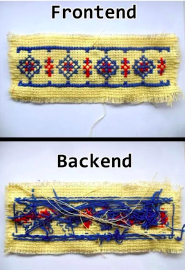

Frontend — клиентская часть продукта (интерфейс, с которым взаимодействует пользователь). В случае с сайтом, её формирует и выводит на экран браузер, который работает с HTML, CSS и JavaScript.
Backend — внутренняя часть продукта, которая находится на сервере и скрыта от пользователей. Для её разработки могут использоваться самые разные языки, например, Python, PHP, Go, JavaScript, Java, С#.
